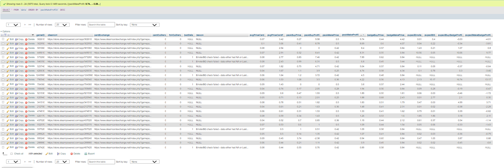

Web Scraper w/ Database (Python)
This project was a personal project I’ve wanted to do for along time. I chose to code the project in python to get more practice using the language. I used MySQL for the database since I had previous knowledge using a local host with MySQL and felt comfortable designing a simple database to store my programs data into. I had to learn/use a little bit of JavaScript and HTML to parse the website data. My goal was to scrape from 5 thousand pages and store the data into a database.
A problem I ran into while doing this project was using multiprocessing to speed up the web accesses I was doing. The initial page I was planning on scrapping from had a limit of 5 page requests a minute, which was far to small for the scale I wanted to do. So, I found a different website with around a 3 page a second limit, but with less data and less accuracy within the data. Multiprocessing was used to get as close to the limits as I could so the program took an hour instead of days. This also allowed me a lot of control with how fast I was sending page requests.
As for the results of the web scrapping, I first ran all the initial statistics on the raw data that I wanted. I then stored the data in custom data class. Using multiprocessing again, I made a thread that would submit these data objects to the database while the program was still running. After a rough start, the last couple thousand pages were properly scraped, parsed, and stored without any bugs.

As for viewing the data, I resulted to the table listed in the phpMyAdmin page of the localhost server. I found the table there was able to order the data by whatever datapoints I wanted. It also allows me to query the database as I want, so I found there was no reason to make a different front end then what phpMyAdmin gave.
- Skills Learned
- Significantly greater understanding of python and its workings
- Much more comfortable with local host software/databases
- Solidified knowledge of MySQL workflow including creation and querying of databases
- Learned how https requests work and the importance of limiting page requests
Check out the source code for the project at the github page below.
https://github.com/BrettParker97/ScraperPy